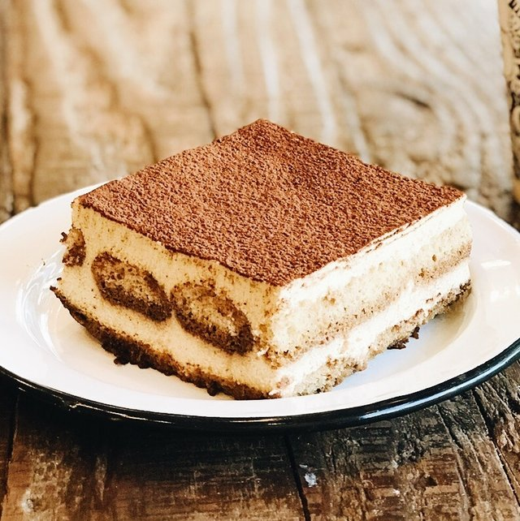

Tiramisu by JW

Tiramisu is so easy to make, that it's not much added effort to just go ahead and make your own homemade lady fingers along with it. Your tiramisu will never be the same... in a good way I mean.
Ingredients
Ladyfingers
- 3 large eggs
- 108g sugar
- 1.5g salt
- 3g vanilla extract
- 148g ap flour
- Powdered sugar for dusting
Zabaglione
- 6/7 egg yolks(depending on size)
- 165g sugar
- 452g mascarpone(best homemade)
- 235g heavy cream
Assembly
- 475g strong coffee
- 58g sugar
- 3tbs brandy or rum *optional*
- 24-30 ladyfingers
- Cocoa powder for sifting
- Chocolate for grating
Instructions
Ladyfingers
- Create a double mixer by filling a pot with a shallow amount of water. Bring to a simmer.
- In a stand mixer mixing bowl, add eggs and granulated sugar.
- Continue whisking until 160 degrees F/ 71 degrees Celsius, less than five minutes otherwise it gets overheated.
- Put in stand mixer in high speed for 7-10 minutes or until 2.5x original volume, soft peaks which looks like soft-serve when you are done with it.
- Carefully fold in vanilla extract and all-purpose flour.
- Transfer mixture to a piping bag.
- Pipe in sheet tray lined with parchment paper - 3 in long, 1 inch wide, 1 in of separation in between (total recipe yields 30 ladyfingers, 2 ea. half sheet trays)
- Bake, and dust some powdered sugar before doing so.
- Put in oven at 350 degrees F, 175 degrees Celsius 8-12 minutes until lightly brown pull and cool in wire rack
Tiramisu Ladyfingers Soaking Solution
- Mix altogether
Tiramisu Cream
- Whisk egg yolks and granulated sugar in a stand bowl mixer until 95 percent of sugar is dissolved.
- Then using an electric mixer, whip in a double boiler until 2.5 times its original volume. (think sabayon)
- Add whipped mascarpone to the egg yolk mixture. Gently fold until not lumpy.
- Add whipped cream and fold gently so that it does not lose air.
Tiramisu Build
- In a 9x9 pan, dunk in ladyfingers in coffee mixture.
- Add half of the tiramisu cream.
- Layer again with ladyfingers, and then the tiramisu cream.
- Cover with plastic wrap to firm overnight.
- Grate chocolate on top, dust with cocoa powder.
Homepage
Other Odin's Recipes